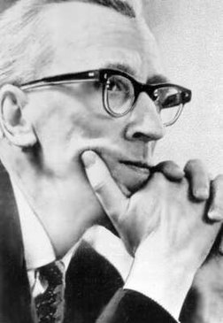

К 100 - летию со дня рождения С.И.Танеева, 4 августа 1956 года, приказом Министерства культуры СССР Научной музыкальной библиотеке Московской консерватории было присвоено имя С.И.Танеева.
В этот период истории библиотеки расширилась её деятельность. В читальном зале библиотеки работают с документами учащиеся, педагоги учебных заведений, профессиональные музыканты и музыковеды страны. По межбиблиотечному абонементу и на условиях проката обслуживаются многие организации и творческие коллективы филармоний, радио и телевидения, оркестры, оперные и другие театры.
В это время получила дальнейшее развитие научно-методическая работа библиотеки: она становится методическим центром для библиотек музыкальных учебных заведений. Накопленный справочно-информационный фонд и сформировавшийся справочно-библиографический аппарат всё более востребуются студентами, педагогами и музыкантами различных специализаций не только Московской консерватории, но и всей страны. В библиотеку всё чаше поступают запросы от зарубежных специалистов. Фонд библиотеки к этому времени насчитывает около 581 746 экз.
В конце 1960-х гг. из стен библиотеки одновременно ушло несколько наиболее
опытных старейших её сотрудников, не подготовив себе замены, что в дальнейшем затрудняло работу многих
её подразделений. Долгие годы библиотека консерватории, будучи специальной, развивалась как замкнутая
система. Этому способствовала и ведомственная разобщенность библиотек, и ранее упомянутые причины.
Необходимость модернизации деятельности библиотеки при отсутствии отечественного опыта такой
модернизации заставили её искать нестандартный путь решения проблемы. Он был найден. Благодаря
инициативе и усилиям пришедшей на смену Е.Н. Артемьевой на должность директора библиотеки В.Д. Магницкой
и при поддержке руководства консерватории было подготовлено решение ЦК КПСС о членстве НМБТ в
Международной ассоциации музыкальных библиотек, архивов и информационных центров (IAML). Участие в
работе Ассоциации существенно стимулировало развитие библиотеки: наконец-то мог быть использован опыт
многих музыкальных библиотек мира, сопоставимых по уровню задач и объему фондов с НМБТ. Это
содействовало выработке стратегии развития, более обоснованному отбору приоритетов и вело к развитию
научных, информационных и других направлений работы библиотеки. К тому же данное событие повышало её
престиж, привлекало к её деятельности внимание вуза, музыкальной общественности в стране и за рубежом и
в итоге способствовало самоидентификации. Стремление соответствовать международным стандартам
стимулировало деятельность библиотеки в Международной ассоциации музыкальных библиотек. Она была
сориентирована на ознакомление зарубежных коллег с библиотечным делом нашей страны, её культурой,
музыкальным искусством.
Основные цели IAML всегда были направлены на содействие обмену книгами и нотами; на помощь в реализации международных проектов в области музыкальной библиографии, документации и библиотечного дела; на обеспечение доступности всех посвящённых музыке публикаций и главное - на кооперацию деятельности библиотек.
Драгоценный международный опыт, полученный на конгрессах и конференциях, НМБТ распространяла на всю сеть музыкальных библиотек страны. В первую очередь он внедрялся в работу самой библиотеки. Была упорядочена её структура, вновь выделен в самостоятельную единицу, то есть, восстановлен в своём статусе после передачи части фондов в 1941 г., отдел редких изданий и рукописей. Это способствовало ведению планомерной работы с редкостями: собиранию материалов в одном фонде (из разных отделов библиотеки), описанию и созданию отдельного каталога редких изданий и рукописей. В 1970-1980-е годы. директорами библиотеки были утверждены: Т.Е. Лысенко (с 1971 по 1974 г.), Ю.А. Суханова (с 1980 по 1984 г.), А.Ф. Черкасова.
С использованием достижений отечественного и зарубежного библиотековедения, опыта библиотек разных профилей в 1970-1980-е г.г.. библиотекой была доработана система каталогов, внедрена регламентирующая и технологическая документация. Принята новая (актовая) система учёта фондов. Были уточнены количественные параметры фонда. К 1980 г. после ремонта библиотеке были предоставлены дополнительные помещения. Во вновь полученном консерваторией Рахманиновском корпусе (здании бывшего Синодального училища церковного пения) библиотеке была выделена площадь для размещения читального зала. После его переезда было расширено помещение абонемента нотно-музыкальной литературы. Новые помещения получили справочно-библиографический отдел и отдел обслуживания учебниками и художественной литературой: они также переместились в третий корпус консерватории. Объём работы библиотеки постоянно увеличивался, видоизменялся и её характер. Будучи вузовской, библиотека вынужденно продолжала выполнять и функции публичной музыкальной библиотеки из-за отсутствия таковой в Москве. В читальном зале Н МБТ обслуживались (как до сих пор обслуживаются) все желающие. В 1986 г. НМБТ была отнесена к числу библиотек федерального значения, а в 1987 г. на неё возложены функции Центра библиографической информации по музыке.
При этом учитывалось наличие в ней справочно-библиографического аппарата, не имевшего аналога в СССР. К этому времени был учтён - до того никогда не учитывавшийся - справочно-информационный фонд библиотеки, а также неопубликованные материалы, составившие около 300 тыс. ед. хран. На протяжении 1966-1991 гг. библиотекой велось плановое систематическое комплектование, были выработаны его принципы: максимальная полнота отбора профильных и необходимых для консерватории изданий; выборочное комплектование остальных материалов в соответствии с тематико-типологическим профилем комплектования (ППК). Разумеется, в советский период НМБТ, как и другие библиотеки, комплектовалась с соблюдением принципов партийности, что отражало моноидеологию, но, по счастью, существенно не влияло ни на характер формирования фонда, ни на его количественные параметры. Библиотеке выделялись бюджетные и незначительные инвалютные ассигнования, а также часть средств, заработанных библиотекой за счет проката нотных изданий. Необходимо отметить, что за весь советский период истории библиотеки она систематически, хотя и ограниченно, получала государственные средства на пополнение фондов. Круг источников комплектования не претерпевал существенных изменений, что обеспечивало приток всей издаваемой нотно-музыкальной литературы; докомплектование фондов осуществлялось необходимыми букинистическими изданиями. Библиотека покупала и зарубежные издания, предварительно проводя серьёзнейшую экспертную оценку, в том числе с точки зрения конъюнктуры спроса на издание и его ценности (по причине чрезвычайной ограниченности средств). Приобреталась в первую очередь учебная литература, а также художественная литература и литература универсального содержания.
За прошедшие после юбилейного 1966 г. 40 лет библиотека почти на треть увеличила свой фонд. В первую очередь необходимо назвать максимально полно поступавшие отечественные нотные издания. Параллельно докомплектовывалось утраченное, ремонтировалось ветхое. Библиотека продолжала получать обязательный (бесплатный) нотный экземпляр из Всесоюзной книжной палаты.
Среди наиболее значимых назовём переданные в дар библиотеке личные коллекции композитора Д.Б. Кабалевского, музыковеда Г.А. Поляновского (4000 ед. хран.), уникальную коллекцию книг и статей об альте В.В. Борисовского. Благодаря активному участию библиотеки в работе проводившихся в СССР международных нотных оптовых ярмарок, а также выставок-ярмарок на ВДНХ, где была представлена и нотно-музыкальная литература, в библиотеку поступало значительно больше зарубежных нотных изданий, чем современного зарубежного музыкального искусства, поиск дополнительных источников поступления зарубежных нот, инициация дарений дали возможность пополнить её многочисленными изданиями. Среди них переданные в дар библиотеке ноты всемирно известного издательства «Петерс» (ГДР), экспонировавшиеся на выставке в Москве. Союзы композиторов, высшие музыкальные учебные заведения стран Восточной Европы, многие учреждения мира на протяжении 1960-1990-х гг. постоянно присылали в дар библиотеке ноты современных композиторов своих стран, благодаря чему в фонде они оказались представлены с достаточной полнотой. Скажем, произведения финских композиторов были переданы в дар НМБТ Финским музыкальным центром. Это дало читателю возможность библиотеки познакомиться с панорамой музыкальной Финляндии. Среди многочисленных даров необходимо отметить ценный дар крупнейших музыкальных фирм ФРГ, передавших библиотеке экспонаты проводившейся в Москве оптовой ярмарки "Музыка-89" (около 700 названий). Среди подаренного - издания композиторов-классиков, современных композиторов, книги и музыкальные справочные издания. Так, в 1990 г. в библиотеку поступила коллекция нот современных композиторов ФРГ, в том числе все произведения К. Штокхаузена. Укажем также на поступившие в библиотеку в качестве дара ноты произведений французских композиторов О. Мессиана, П. Булеза и многих других.
На оптовых ярмарках библиотека постоянно приобретала нотные и книжные издания стран Восточной Европы. Издательством "Музыка" (Венгрия) специально для библиотеки Московской консерватории по переданному ею списку были допечатаны издания, отсутствовавшие в фонде. Библиотеке также подарили несколько особо ценных коллекций нот и книг по музыке. Период с 1965 по 1990 г. можно назвать благоприятным с точки зрения формирования фондов библиотеки. Отличительной особенностью этого периода был профессиональный поиск путей оптимизации их комплектования. Такой подход к комплектованию существенно стимулировала история неожиданных счастливых пополнений фонда, а затем и горестных для библиотеки отчуждений наиболее ценной его части в предшествующие десятилетия. Комплектаторы предпочли больше не полагаться на случай. Поэтому их каждодневный кропотливый труд и профессионализм принесли свои результаты - за этот период были восполнены многие лакуны в фонде.
(из книги "Библиотека Московской консерватории" Э.Б.Рассиной)